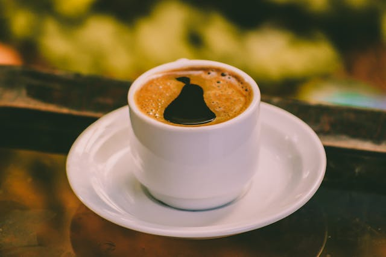

Chocolate Milkshake
Price: $5.00
Start by adding scoops of your favorite chocolate ice cream into a blender. Pour in cold milk - the amount depends on how thick you want your milkshake. For extra chocolatey goodness, add a tablespoon or two of chocolate syrup. Blend everything until smooth and creamy. Taste and adjust the sweetness or thickness if necessary by adding more ice cream or milk. Pour the chocolate milkshake into a tall glass and top it off with whipped cream and a drizzle of chocolate syrup for that classic finishing touch. Grab a straw and indulge in the rich, creamy bliss of this homemade chocolate delight!
Latte
Price: $4.50
To brew a delightful latte coffee, start by brewing a shot of espresso using an espresso machine. Meanwhile, heat milk in a separate pitcher or saucepan, taking care not to let it boil. Froth the milk using a steam wand if you have one, or vigorously whisk it until frothy if not. Pour the freshly brewed espresso into a cup, then slowly add the frothed milk, pouring it in a circular motion to create a creamy layer on top. Adjust the ratio of espresso to milk according to your preference for strength and creaminess. Optionally, you can sprinkle some cocoa powder or cinnamon on top for added flavor. Sip and savor the smooth, velvety texture and rich espresso flavor of your homemade latte.
Espresso
Price: $12.00
Preheat your espresso machine and portafilter, ensuring optimal extraction temperature. Tamp the freshly ground coffee grounds firmly and evenly into the portafilter. Lock the portafilter into the machine and start the extraction process, aiming for a steady stream of rich, dark espresso. Monitor the extraction time, aiming for around 25-30 seconds for a balanced shot. Adjust the grind size, dosage, and extraction time to achieve your desired taste profile. Once brewed, serve immediately to enjoy the bold, aromatic flavors of freshly brewed espresso.
Black Coffee
Price: $4.50
Brewing a simple yet satisfying cup of black coffee begins with selecting quality coffee beans and grinding them to a medium-coarse consistency. Use a coffee maker or a pour-over method to brew your coffee. Place a filter in the coffee maker or dripper, add the ground coffee, and pour hot water (just off the boil) over the grounds in a slow, steady stream. The water should cover the coffee grounds evenly, allowing the coffee to bloom before continuing to pour. Let the water drip through the grounds, extracting the rich flavors, and resulting in a robust black coffee. Once brewed, pour the coffee into your favorite mug and enjoy it as it is or customize it with sugar, cream, or flavorings according to your preference.